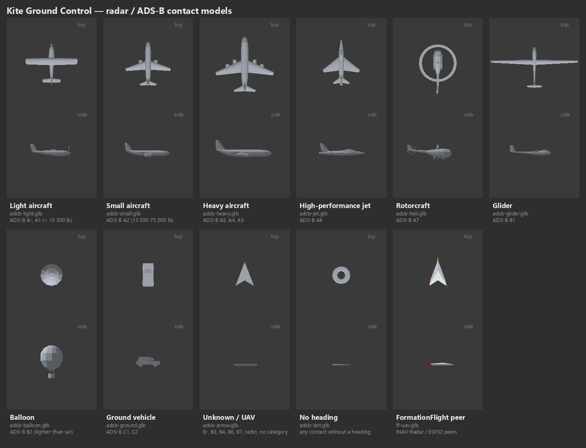
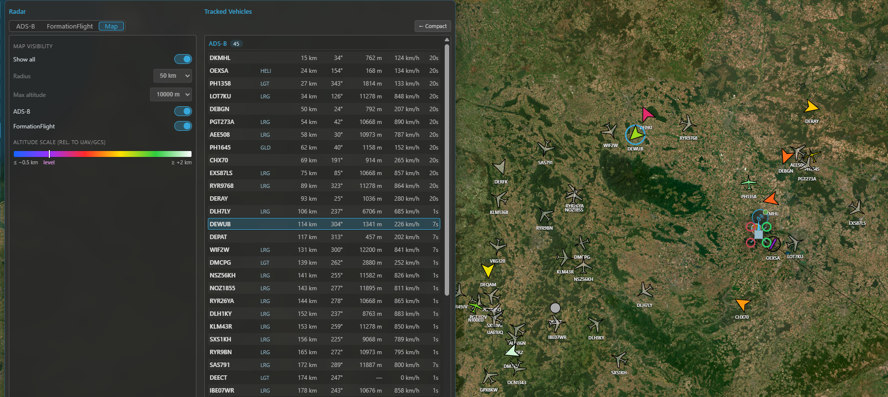
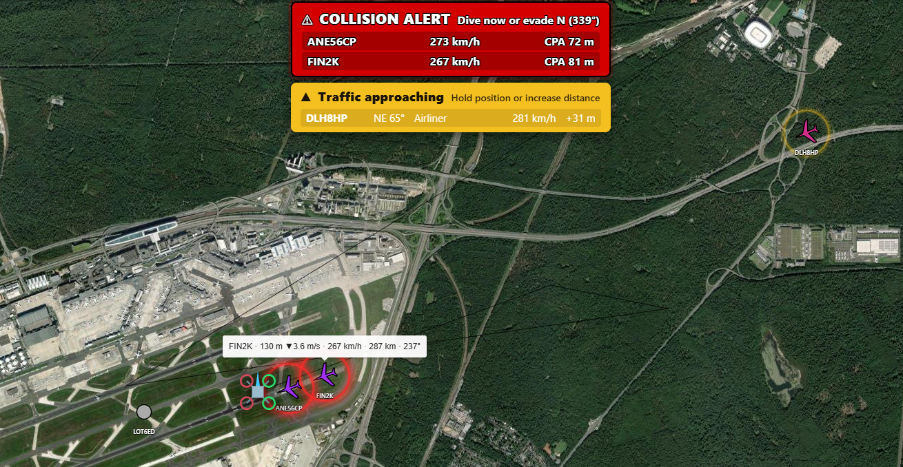

Radar & ADS-B¶
Kite's Radar tracks other aircraft around you — manned traffic and fellow pilots — separately from your own connected UAV. It pulls contacts from independent sources, shows them in a list and on the map (2D and 3D), and can raise collision alerts when manned traffic closes on your aircraft.
It's deliberately isolated from your flight link: the radar runs on its own connections and never shares the serial port the flight controller uses, so it can't disturb your telemetry.
Not a real radar
The name is borrowed from the hobby (INAV-Radar / MWP). Kite doesn't transmit anything to detect aircraft — it receives position reports the aircraft (or a ground service) already broadcast.
Turning it on¶
Radar is off by default. Enable it in Settings → Data → Telemetry:
- Switch on the Radar master toggle — this reveals the Radar tool on the navigation rail.
- Turn on the systems you want: ADS-B and/or FormationFlight. Each is independent; leave off what you don't use.
Then open the Radar tool. The panel has a tab per enabled system for source configuration on the left, and the tracked-vehicle list (all systems, grouped) on the right, plus a Map tab for the map-display controls. A Compact button collapses it to just the list.

The Radar panel: the source configuration for the selected system on the left, all tracked vehicles (grouped by system) on the right.
ADS-B¶
ADS-B is the position broadcast that most manned aircraft transmit. Kite can collect it from three kinds of feed at once and merges them into one ADS-B list (de-duplicated by the aircraft's ICAO address, so the same plane seen by two feeds appears once):
- Online services — public ADS-B aggregators over the internet. Two are built-in (adsb.lol and adsb.fi — just toggle them on). You can add more as custom rows (name + URL template + optional API key); adsb.one comes pre-filled as an example custom row (it's there for convenience but left off by default, as that service has had server-side reliability issues). Set the download radius (10–100 km) and the poll interval (2–30 s) under Online service. Online feeds are fetched around the area you're looking at — the 2D map centre or the 3D camera focus — so panning the map moves the query. No hardware needed.
- Local receiver — a USB ADS-B receiver (e.g. ADSBee, PicoADSB) that streams MAVLink
ADSB_VEHICLE(message #246). Add a receiver row under Local sources, pick its serial port and baud, and Kite reads the traffic directly — fully offline. Kite accepts both MAVLink v1 and v2 automatically (it detects the frame version itself — there's no setting to match), so just point the receiver at the port. (Network / Wi-Fi receivers are coming.) - From your UAV — on INAV 8.0+, if your aircraft has its own ADS-B receiver, Kite can download its traffic list over the existing flight link (the UAV Source toggle). This appears only when the connected FC supports it; ArduPilot and PX4 don't offer this path.
Reading the ADS-B tab¶
Top to bottom, the ADS-B tab is organized into:
- Alerts — the collision-alert toggles and thresholds (see Collision alerts).
- Online service — the download radius and poll interval that apply to all online feeds.
- Online sources — the provider rows: the two built-ins plus any custom rows, with Add source.
- Local sources — your hardware receivers, with Add receiver.
Every source row has its own on/off toggle and a status badge — a green number is the live contact count from that feed, a red ✕ means it errored — so you can mute a feed without deleting it. A feed that fails (typically a provider's rate limit, HTTP 429) is backed off automatically: Kite doubles the spacing of that feed's requests after every failed attempt, up to one minute, and returns to your poll interval as soon as a request succeeds again. The other feeds keep their normal rate. An enabled row collapses to a single line (name · count · toggle); a disabled row expands to show its fields (URL / API key for online, port / baud for a receiver) and a delete button. New rows start disabled so you can fill them in first. A serial port already used by another source is shown as in use in the other pickers.
Online ADS-B needs internet
The online services need connectivity. In the field with no connection, a local receiver or the UAV source keep working.
FormationFlight¶
FormationFlight (the open-source ESP32 mesh radar, formerly INAV-Radar) lets a group of pilots see each other. Each aircraft carries an ESP32 module that broadcasts its position over its radio and relays the peers it hears. Connect a receiver module to Kite over serial (on the FormationFlight tab: pick the port, set a node name).
To join the mesh, Kite presents itself to the module as an INAV flight controller located at your GCS position, so the module shares your location with the formation and relays the other peers back to you. Peers appear as letters (A–F) with their position, heading, speed and a link-quality indicator (0–4); a peer that goes silent is marked lost and kept at its last position for a while.
FormationFlight contacts are for monitoring and pilot-to-pilot awareness only — they never raise collision alerts (those are ADS-B only, below).
For the module firmware and hardware, see the FormationFlight project.
The tracked-vehicle list¶
The right side lists every contact, grouped ADS-B → FormationFlight, each on one row. Columns are tailored per system (ADS-B carries altitude, ground speed, a vertical trend and an aircraft-type abbreviation; FormationFlight carries the relative altitude and link quality).
- Distance and bearing are measured from your connected UAV (when it has a GPS fix), otherwise from your GCS location.
- Contacts fade with age and drop off after their time-out.
- Selecting a row highlights that contact on the map (and vice-versa).
On the map¶
Contacts render on both the 2D and 3D maps in their own layer, oriented to heading, with the callsign as a label (full readout on hover / when selected). Configure the display from the panel's Map tab.
Colour means altitude — relative to you, not distance. The scale is centred on your level (the UAV's altitude with a fix, else the ground at your GCS):
- violet = right at your level (highest danger),
- warming through red → yellow → green → white as a contact climbs above you,
- blue for anything below you.
A legend in the Map tab shows the scale. In 3D, near-level contacts also get a drop-line to the ground and a footprint circle so you can judge where they are.

In 3D each contact is drawn as a model chosen by its ADS-B emitter category; contacts without a heading become a flat ring, FormationFlight peers the generic UAV arrow. The model's own colour never shows — the altitude scale replaces it.
Map controls (Map tab):
- Show all — ignore the relevance filters and draw everything.
- Radius — contacts beyond it are dimmed and shrunk (never hidden).
- Max altitude — a hard ceiling that hides high airliners from the map as clutter (they stay in the list); anything descending toward your level is shown regardless.
- Per-system visibility — show/hide ADS-B or FormationFlight on the map independently of tracking them.

Traffic on the map: silhouettes coloured by altitude relative to you, with the legend and the 3D drop-lines for near-level contacts.
Collision alerts¶
For ADS-B traffic only, Kite can warn you when a contact threatens your connected UAV (it needs a valid GPS fix on your aircraft; without one, alerts are off). There are two stages, each toggled in the ADS-B tab's Alerts group:
- Stage 1 — Caution — a contact is within the warn radius and the distance is decreasing. Cheap and always available; shown yellow.
- Stage 2 — Collision warning — Kite predicts the closest point of approach from both 3D tracks (course + climb/sink) and warns if the predicted miss is too small within the look-ahead window. Shown red, with a suggested evasion.
Alerts surface as a banner along the top of the map (listing every affected contact, click a row to select it), an audible tone and an optional spoken callout (in your UI language), and a pulsing highlight on the contact on both maps. Sound and voice have separate switches, and the numeric thresholds (warn radius, vertical separation, CPA miss distances and look-ahead) are adjustable in the same group.

A collision alert: the banner over the map and the pulsing highlight on the conflicting contact.
An aid, not separation
These alerts help you spot converging traffic — they are not an anti-collision system and don't command your aircraft. Keep visual watch and follow your local rules.